Water Sports: Hyper Hydration & Water QWOP (2023)
Water Sports: Hyper Hydration & Water QWOP is a foray into machine learning via two projects involving optimization algorithms and reinforcement learning. It places a tubular geometry, representing a water bottle at the center of the inquiry. Firstly, single objective optimization for the 3D profile that empties itself the fastest and then mulit-objective optimization by balancing emptying speed and surface area.
The code and studies for this project can be found on Github, here.
| 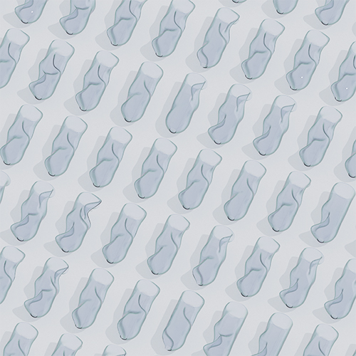 |  |
This project was developed as part of the Computational Explorations seminar at ITECH master´s program in collaboration with Chris Kang, Markus Renner, and Cornerlius Carl.
Part 1. Hyper Hydration
The project's initial phase involved implementing various algorithms encompassing both single and multi-objective optimization techniques to efficiently optimize the shape of a water bottle. The project aimed to develop a water bottle model with fixed top and bottom sizes while allowing for a variable profile along the entire circumference. The primary objective was identifying optimal parameters for efficient water release, minimizing the time required for water to exit.
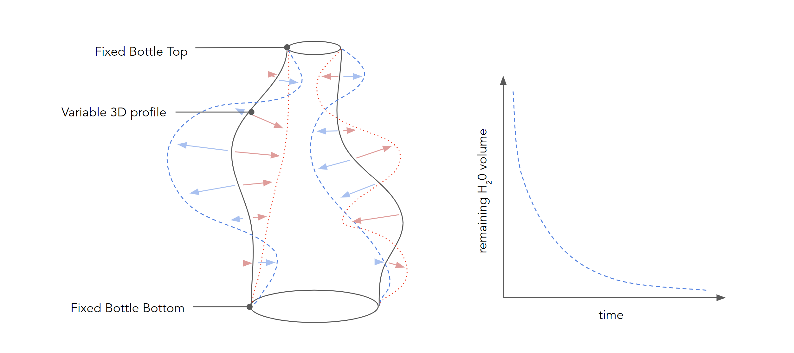The single-objective optimization focused on maximizing water expulsion speed from the bottle. The multi-objective optimization strategy introduced an additional factor – the size of the exit cap. The aim was to strike a balance between water release speed and minimizing the cap size, a challenge due to the conflicting nature of these two objectives.
The workflow utilized a Python library to generate NURBS surfaces exported as STL files. These were processed by a Blender script to combine static bodies representing the cap and water storage. An alternative Python library was later used to address seam issues. Post mesh generation, FluidX3d, a modified CFD simulation, used STL files as input. Adjustments were made to the simulation's source code using C++ for dynamic data exchange. A Python script managed the process, leveraging algorithms to trigger simulation runs.
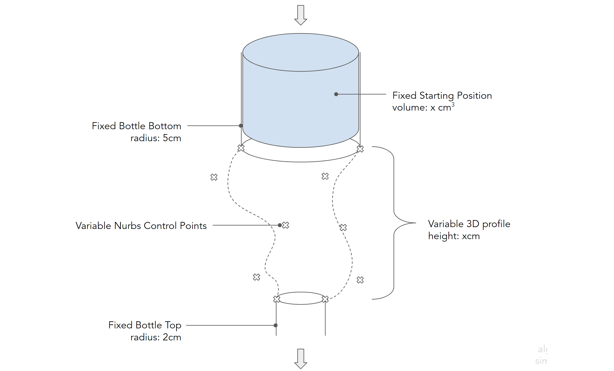The bottle's design utilized 5 circles with 6 control points each, totaling 30 parameters. Control points allowed flexible shape creation along a line between the central point and a radius of 1. Static bodies were consistently incorporated at both ends of the bottle, serving distinct purposes. The first housed water storage, while the final acted as the cap for controlled water release.
| 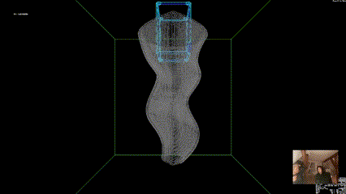 | 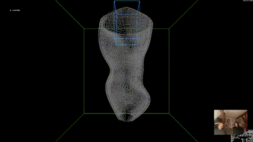 |
| 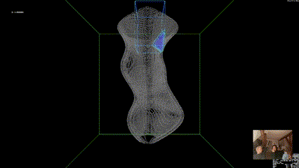 | 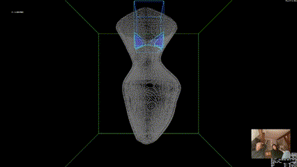 |
Initial observations from single-objective optimization were inconclusive regarding curvature patterns. Throughout experimentation, the rbfopt algorithm outperformed others in speed and robustness, demonstrating advantages in optimization efficiency. Optimized single-objective designs aimed to enhance drainage efficiency through vortex creation, achieving an 11% improvement compared to a simple cylinder. Further analysis was needed to understand these improvements.
Single-Objective Convergence & Robustness
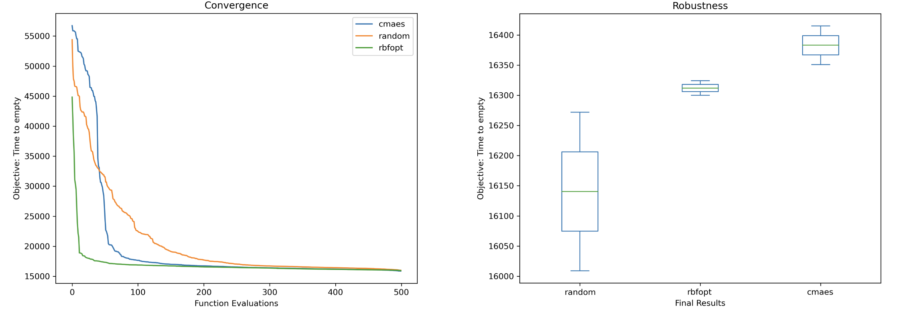In the context of multi-objective optimization, it was observed that both NSGA2 and NSGA3 yielded similar outputs. However, NSGA2 outperformed other algorithms in terms of convergence and objective achievement. Unfortunately, the extensive simulation time of approximately 12 hours per run posed a challenge in evaluating algorithm robustness.
Multi-Objective Convergence & Robustness
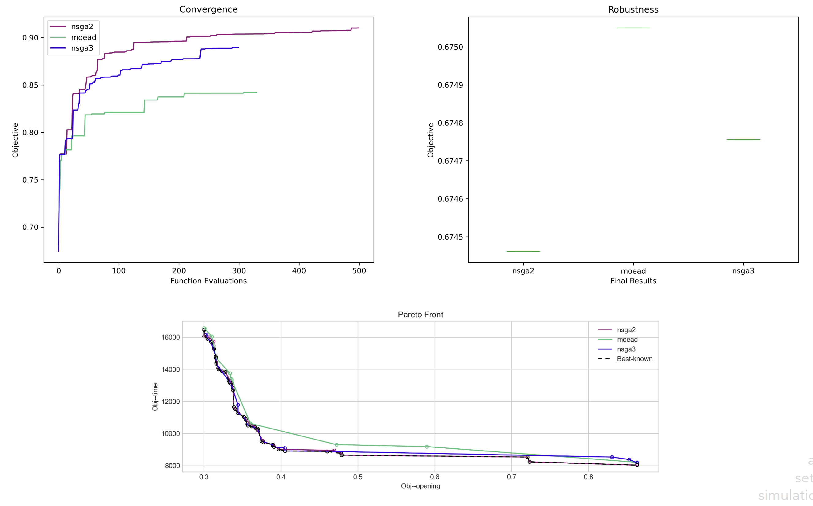In contrast to single-objective optimization results, the outcomes of multi-objective optimization displayed distinct differences in optimized objectives and overall bottle shape. Unlike single-objective optimization, which focused on specific improvements, multi-objective optimization considered multiple objectives simultaneously.
Clustering
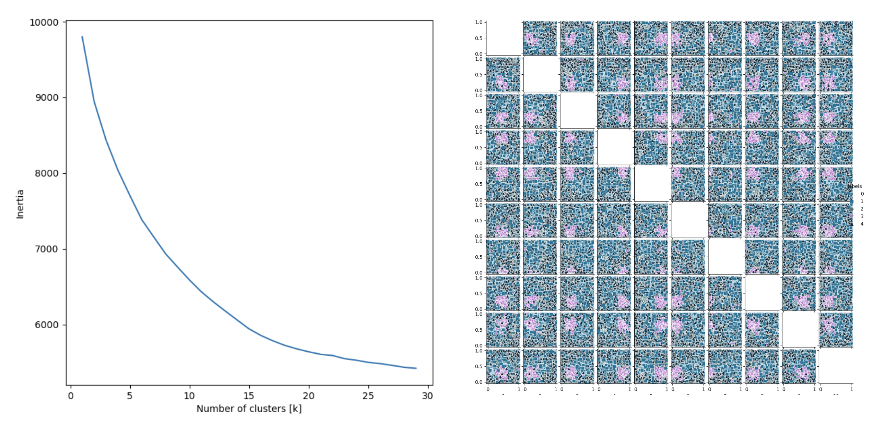The optimization process explores a broader range of design possibilities and objectives, leading to a greater diversity in the optimized bottle shapes and objectives achieved. The multi-objective optimization aims to strike a balance between conflicting objectives, such as maximizing drainage efficiency while minimizing simulation steps or achieving an optimal shape while considering stability or other factors.
Results (in simulation steps)
 |
 |
 |
 |
| Unoptimized: 17,396 | RBFOpt: 15,849 | CMAE-S: 15,863 | Random: 16,004 |
|
|
| Unoptimized: 17,396 | RBFOpt: 15,849 |
|
|
| CMAE-S: 15,863 | Random: 16,004 |
The diverse objectives and inherent trade-offs in multi-objective optimization generated a broader spectrum of optimized bottle shapes and objectives. This diversity allowed for a comprehensive exploration of the design space, enabling decision-makers to select solutions aligned with their specific needs and priorities
Part 2. Water QWOP
Drawing inspiration from the extensively studied game QWOP, the team aimed to develop their own version of the game. In this iteration, the primary objective was to optimize the distance water could be thrown, striving for maximum range.
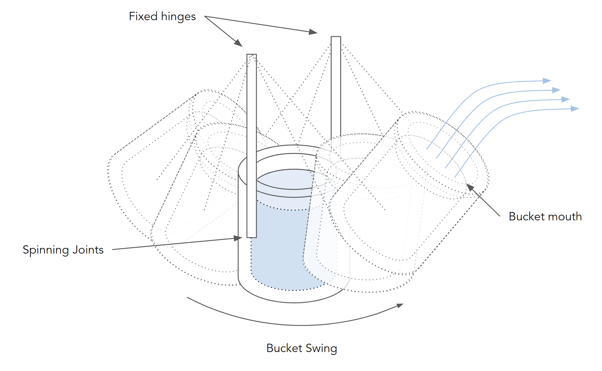To establish a reward system, water droplets were programmed to propel themselves before freezing upon floor contact. Measurements were taken from the bucket's position to the landing spot, determining a reward based on average distance per throw. This reward calculation evaluated the agent's performance in maximizing throwing distance.
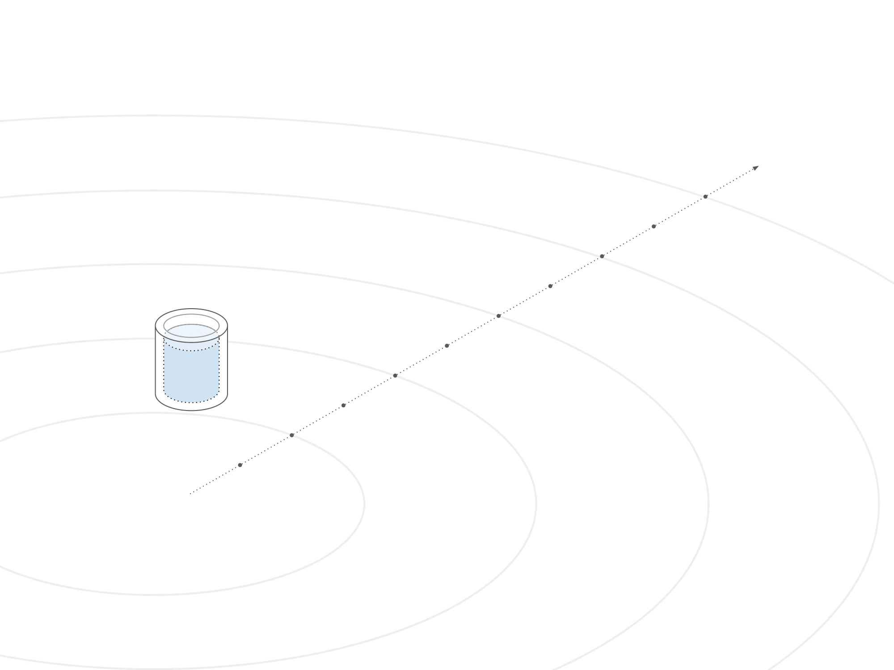The Unity-based agent featured elongated arms with hinge joints, connected at the base, and equipped with a bucket. Water spheres within the bucket simulated throwing.
|
The agent's arms are composed of four distinct sections, each equipped with five hinge joints. Among these joints, four are driven by motors that respond to specific key presses, enabling controlled articulation of the arms. The bucket, on the other hand, accommodates ten individual spheres that represent the water. These spheres possess the ability to move freely and are propelled in accordance with the velocity and movement of the bucket, simulating the throwing action.
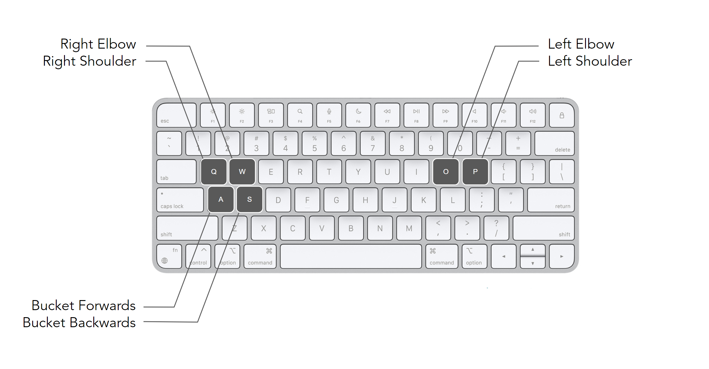The actuation of the right shoulder is assigned to the key Q, the right elbow to the key W, the left elbow to the key O, the right elbow to the key P, and the forward and backward rotation of the bucket at the wrists is controlled by the keys A and S, respectively.

With the environment now configured, a prefab was generated to streamline the setup process. This prefab served as a template for creating multiple agents that could undergo simultaneous training. By employing this approach, the training process could be efficiently conducted across numerous instances of the agent, allowing for parallel training and enhanced optimization.
Run 1: Reward & Episode Length
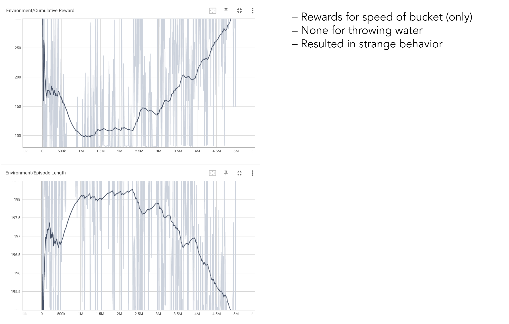In the initial run, rewards were exclusively based on the speed of the bucket, neglecting other factors. Agents were limited to observing the position, rotation, and velocity of the bucket. Their actions were determined by discrete key presses, with a total of six available controls. The corresponding configuration file (.yaml) can be found in the config folder of the Unity setup. Notably, the agent demonstrated visible improvement within this setup, indicating progress in achieving optimal performance.

Upon conducting a more thorough analysis, it became apparent that due to a bug affecting the rewards attributed to the water being tossed and the subsequent average calculation, the agent's behavior became excessively reliant on the speed of the bucket. This unintended outcome manifested as the observed "shaky-shakey" behavior. Consequently, it was necessary to fine-tune both the observation inputs and reward system in order to correct this issue and achieve the desired behavior from the agent.
Runs 2-4: Reward & Episode Length
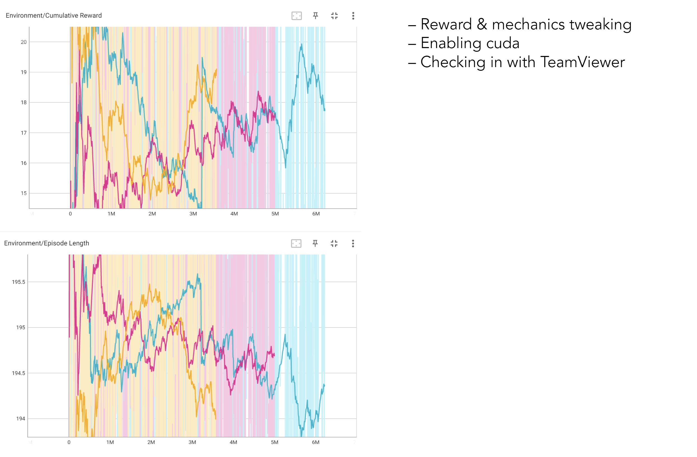Subsequent training runs (2-4) primarily focused on refining the code, identifying and rectifying bugs to enhance the agent's behavior. Unfortunately, these iterations did not yield significant progress in terms of training outcomes beyond bug fixing. The primary objective during this phase was to troubleshoot and resolve issues that were impeding the optimization of the agent's performance.
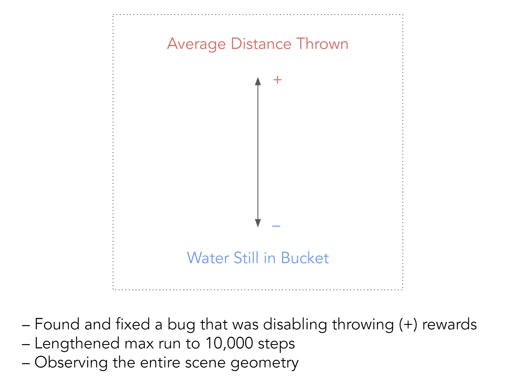After persistent efforts, the bug that hindered the agent from receiving rewards was successfully resolved. Additionally, the maximum length of steps before resetting the episode was extended to 10,000, granting the agent more opportunities for exploration and learning. Notably, a significant improvement was made by allowing the agent to access the position information of all geometric elements within the scene. This expanded observation capability provided the agent with a more comprehensive understanding of its environment, which would likely contribute to enhanced performance and more sophisticated decision-making.

Under the revised constraints and expanded capabilities, the agent underwent an extensive training process, encompassing approximately 18 million steps. Throughout this training period, the agent demonstrated a gradual improvement in its ability to throw water over a distance. It is worth noting that while the agent's performance falls short of that of a skilled human, with an average of 2.5 meter throws, the observed trend reveals promising signs of continual progress and learning over time. This incremental improvement suggests that with further iterations and refinement, the agent's performance has the potential to approach or even surpass human proficiency in the task.
Run 5: Reward & Episode Length
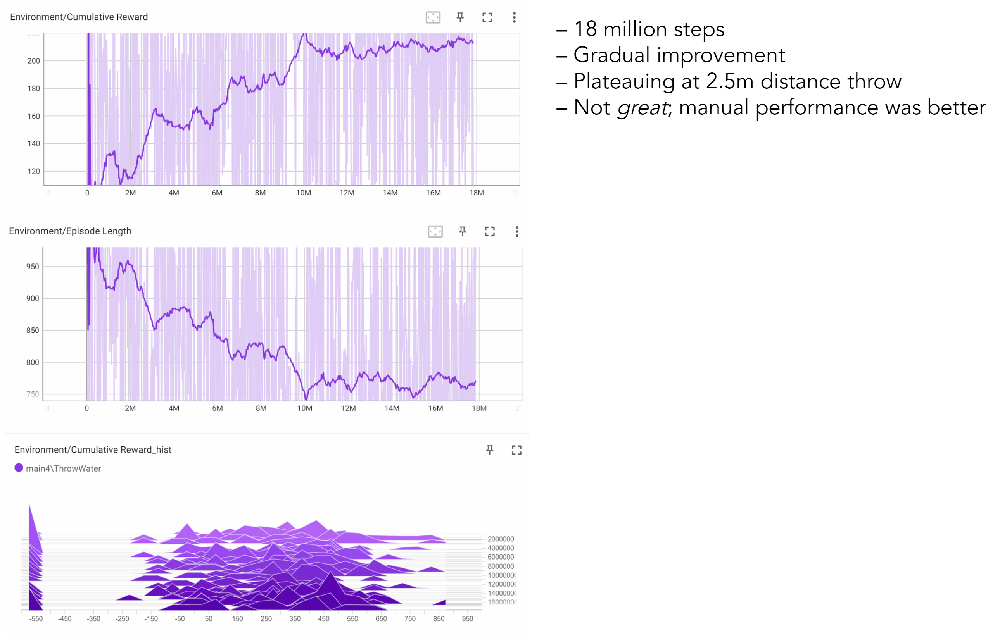The observed behavior of the agent, as described above, indicates a tendency to swing the bucket back and forth before dumping the geometry out. It is hypothesized that additional training runs and further fine-tuning of parameters are necessary to achieve the desired outcome and refine the model's behavior. This iterative process of experimentation, adjustment, and evaluation is often required to optimize the training of machine learning models and align their actions more closely with the intended objectives. By conducting additional runs and carefully tweaking the parameters, it is expected that the agent's performance can be further improved and the undesired swinging behavior can be mitigated.